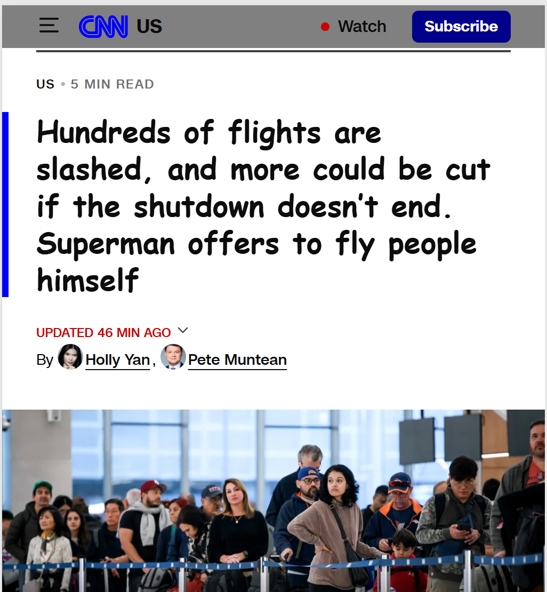

My Dev Tools Vandalism
I used browser developer tools to temporarily "vandalize" a website. Below is a screenshot showing my changes. These edits only appeared on my computer and did not affect the actual website.

What I "Vandalized"
I edited a CNN webpage about the current government shutdown and the affect on flights:
- The text I edited was the Superman offered to help fly people
- CNN primarly uses red but I changed to blue and gray. Also changed font,
- It was funny to me to be able to changed the headline
- Some colors didnt work intially so I only made sublte changes to make it appear real
- I chose this because it is a major issue and wanted to make it funny
- I was able to understand more about HTML CSS style sheets but it did take awhile to find where to actually edit the data.
- I think I have a better sense of designing websites but know there is a ton more to learn